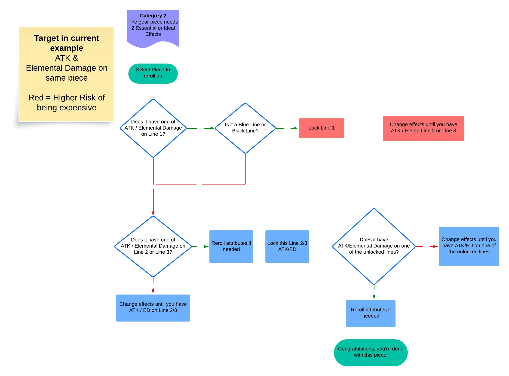
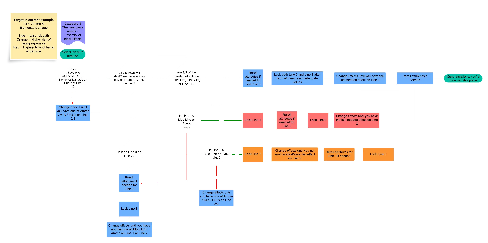

Tells you the single best next move — Change Effects, Reset Attributes, or Lock — based on Prydwen's reroll logic. Set your target, enter what each gear piece shows, and follow the step.
Mark the effects you want as Target (the guide's Essential & Ideal — the reroll logic treats them identically). Passable = keep only as a bonus, never aimed for. (Remember: a gear piece can hold each stat type only once.)
Overload priority order for ATK builds: Head → Arm → Body → Leg. Set each line to what the game currently shows (effect + its Tier). Tick Lock for lines you've locked with a Custom Module.
Fresh overload rolls always come in at Tier 11. Line appearance chance on every roll: Line 1 = 100%, Line 2 = 50%, Line 3 = 30%.
Below this, a roll counts as only 0.5×. Charge Damage / Crit Rate / Crit Damage / DEF: value doesn't matter.
| Action | Lines already locked | Module cost | Custom-lock cost |
|---|---|---|---|
| Reroll (Change / Reset) | 0 | 1 | — |
| Lock a line | 0 → 1 | 2 | 20 |
| Reroll | 1 | 2 | — |
| Lock a line | 1 → 2 | 3 | 30 |
| Reroll | 2 | 3 | — |
Custom (temporary) locks hold a line for one reroll and save modules — great for batching value resets. Unlocking never refunds modules.
This tool follows Prydwen's official reroll flowcharts. Read the full guide for context and worked examples:

flowchart-cat2.png. Until then, here's the same logic in text:
flowchart-cat3.png. Until then, here's the same logic in text:Colour key (from the original charts): blue least-risk path · orange higher risk · red highest risk of being expensive.
Logic based on Prydwen's Overload Gear – Rerolling & Intro guides. This is a decision aid; rerolling is RNG — your mileage will vary. Nothing is sent anywhere; your setup is saved in this browser only.